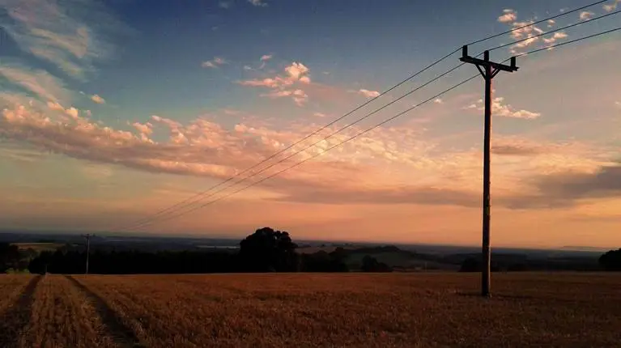

O acesso à energia elétrica nas zonas rurais transformou a vida de milhares de famílias. Além de possibilitar o uso de eletrodomésticos e acesso à tecnologia, a energia garante o funcionamento de sistemas de irrigação, refrigeração de alimentos e ferramentas agrícolas. A eletrificação rural é um passo importante para reduzir desigualdades e fomentar o desenvolvimento sustentável.

"Levar energia para nossa região foi um divisor de águas. Podemos armazenar leite, irrigar e estudar à noite." — Maria, produtora
"A energia elétrica mudou tudo. Antes, dependíamos de lamparinas, hoje temos geladeira e internet!" — José, agricultor
"A chegada da luz nos deu esperança. Agora posso acompanhar as aulas online." — Luana, estudante rural